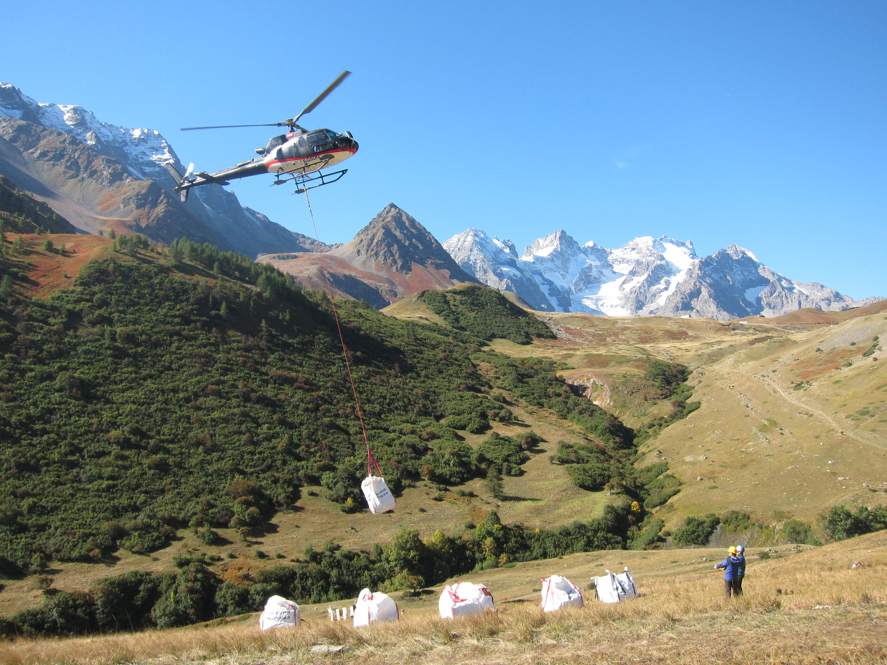

Using whole-community transplant experiments, this project studies the pace of plant responses to warming and drought. It focuses on delayed and transient dynamics across populations, communities, and ecosystem processes, and their consequences for predicting biodiversity change.

Photo by Tamara Münkemüller
Climate change affects plants across levels of biological organization, from individuals and populations to communities and ecosystem processes. In this project, I use whole-community transplant experiments to study how plant responses to climate change unfold over time. By moving intact plant communities across climatic gradients, these experiments allow direct quantification of response rates, delayed adjustments, and transient dynamics under warming and drought. This work aims to disentangle population, community, and ecosystem-level processes underlying why ecological change often proceeds more slowly than climate change itself.
I quantify changes in species performance, population dynamics, and community composition following experimental climate change, capturing both early and long-term responses. I examine shifts in phenology and functional traits at both population and community levels.
By manipulating temperature and moisture through transplants, I disentangle the effects of warming and drought on response rates, response timing, and trajectories of populations and communities.
I examine how population-level responses translate into colonization and extinction dynamics, and how these dynamics drive changes in community composition. In parallel, I assess how environmental filtering and biotic interactions shape community assembly over time.
Beyond plants, I investigate how changes in plant populations and communities affect ecosystem functioning and associated microbial communities under experimental climate change.
I assess how delayed population and community responses, including transient dynamics, influence the predictability of ecological change under experimental climate change.
This project is embedded in international research networks, the TransPlant Network, which synthesizes data from more than 40 whole-community transplant experiments across the Northern Hemisphere. These collaborations enable comparative analyses across systems, climates, and experimental contexts, and support the development of general insights into the predictability of ecological change.
I conducted the transplant experiment in the French Alps during my PhD at Université Grenoble Alpes with Tamara Münkemüller and Wilfried Thuiller, and later led comparative and synthesis work within the TransPlant Network as a postdoctoral researcher at ETH Zürich with Jake Alexander and Vigdis Vandvik.